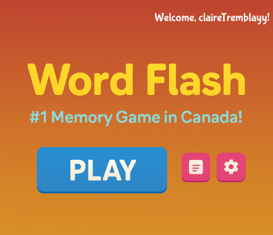
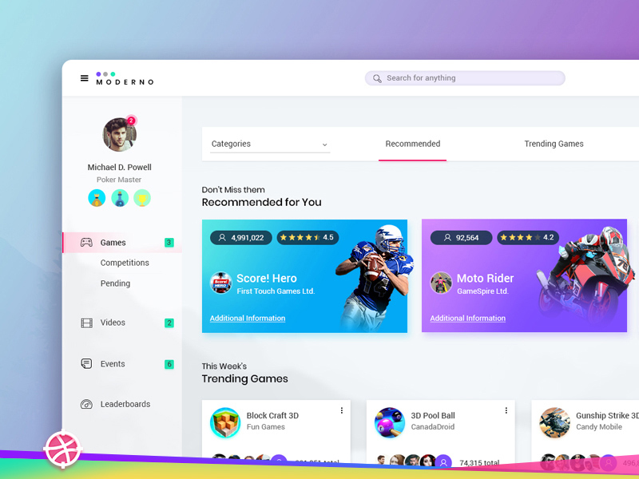

Dental Clinic Website
A professional clinic website featuring online booking, service pages, provider profiles, testimonials, and clear patient-focused navigation.
Open project →Projects
A few examples of design-driven, user-focused projects I’ve built across web development, UI design, and interactive experiences.
A professional clinic website featuring online booking, service pages, provider profiles, testimonials, and clear patient-focused navigation.
Open project →
A fun browser-based memory challenge where players view and recall a set of words under time pressure, building a quick and engaging gameplay loop.
Open project →A modern storefront experience with categories, account flow, shopping cart logic, product filtering, and a user-friendly checkout concept.
Open project →
An interactive data dashboard that visualizes player and team statistics by league, season, and performance category for clear comparisons.
Open project →